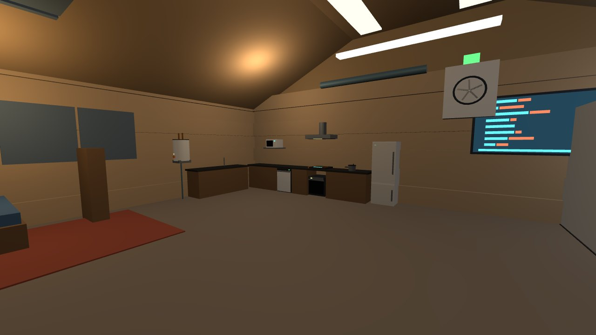
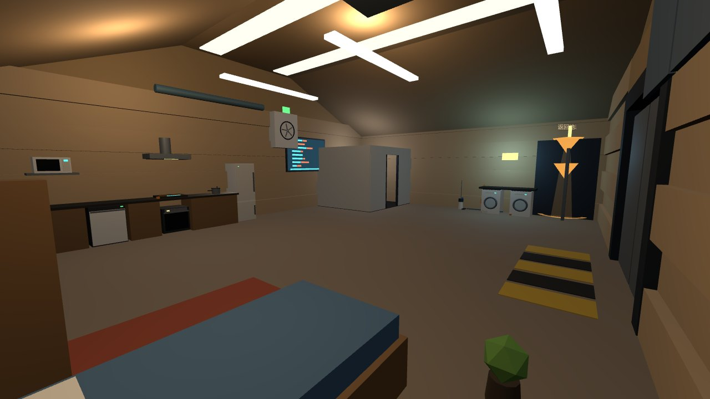
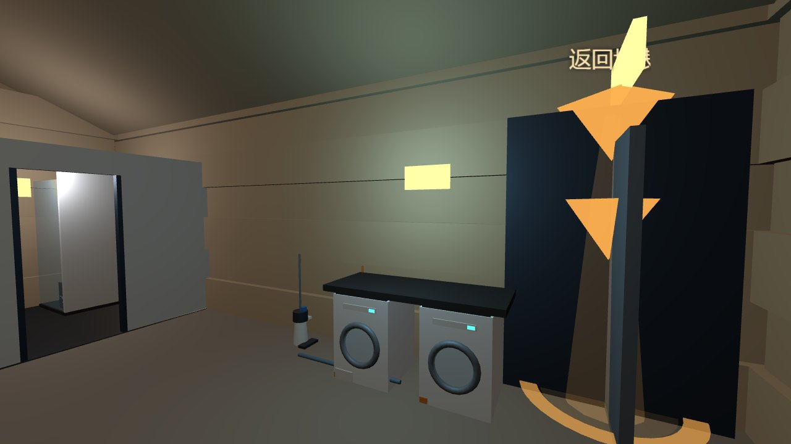
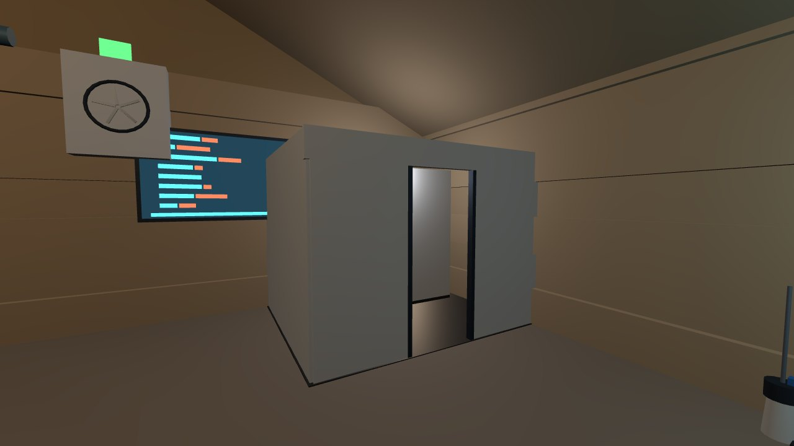

Until this round the city had not one appliance. People lived in the undercity quarter and the berm village, the galley was a drawing, and no fridge, washer, toilet, hob or water heater had ever been calculated for a 70 kPa cabin of 26.5% oxygen and a 58/42 nitrogen-argon buffer. This page is two things: nine ledgers that work out the physics of each appliance under those conditions - every number traced to a script, every expectation written down before the script ran - and a walk-in show home built from what the ledgers said, not the other way round.
A 12 × 9 m room off the foyer's right wall with a kitchen, a bathroom, a laundry corner, a bed and one small screen. Thirteen appliances, each built to the size and power its ledger gave it, each wired to the voltage its ledger allowed, each draining or venting to the line the recycle and life-support cards actually have.
The cabin conditions are not this dossier's to set. They are cited: 70 kPa, 26.5% O₂, N₂ 58 / Ar 42 from the life-support tank farm card; 400 V DC utilisation, 48 V DC instrument from the grid card; the 98.2% water-loop closure and the urine pre-treatment constraint from the recycle plant; the 1.63× flame-spread figure from the fire station's ledger. The dossier's own rule, written into its first commit before any script ran, is that every expectation is pre-registered with a band, every gate must be able to go red, and a number that cannot be closed is written as not closable, missing X rather than filled in.
Two things the ledgers found were not about appliances at all. The recycle plant's intake table has no line for laundry or dishwashing - the grey-water line is 1.23 litres per person-day, enough to wash hands. And the tank-farm card's sentence that the argon-rich mix carries sound about 20% faster is wrong in sign: argon is a heavy gas, and sound in this cabin is 4.3% slower. Both went back to their owners as replies, not edits.


Nine ledgers: eight in the order in which a wrong answer would change the geometry, and a ninth opened when the polymer line asked what the appliances need from it.
Water boils at 89.99 °C. Two routes (Antoine, Clausius-Clapeyron) agree to 0.2 K. Starch, egg white and pasteurisation are fine; kidney-bean lectin and soybean trypsin inhibitor need 100 °C, and a quarter of the staple diet is soybean, so the pressure cooker is a mandatory part of the food system (+100 kPa gauge → 115 °C). Oven convection is 0.60× natural, 0.69× forced - the fan is not optional. A 1 kW methane burner would emit 4.7 people's CO₂ and draw 8.2 people's O₂ into a loop with no chimney, on top of the fire ledger's 1.63× spread; induction puts 84% into the pot and pays none of it.
With Earth-sized condenser area the condensing temperature climbs from 40 to 52 °C in the thin argon-rich air and COP falls 17%; the fix is 1.67× condenser area or a fan. Every watt ends up as cabin heat. Whether that heat is a debit or a credit depends on the cavern's heat balance, which no card holds - under declared assumptions the undercity loses 37-58 kW against 19 kW of gains for its first decade. The counter-case, cold piped in from outside for the village, holds both fridge and freezer (surface day maximum −37.5 °C) at the cost of hull penetrations and a punctured vapour barrier; the undercity has no outside. Both printed, neither chosen.
115 people wash 92 kg of clothes per sol in 782 L, plus 172 L of dishes: 955 L/sol against a recycle intake of 659 that never had a line for either. At the plant's own 98.2% closure the net loss is 17 L/sol, lifting city make-up water from 30.3 to 47.5 L/sol. Drying releases 46 kg of water a sol into the air loop (+17% on the condensate line); a heat pump does it for 32 kWh. The 'free' vacuum dryer outside is rejected: venting at 0.6 kPa throws away 1.5× the city's net make-up every sol, and a sealed chamber with a cold trap recovers 99.8% but sublimation costs a quarter more heat than evaporation.
The toilet's flush is not designed but back-calculated from the recycle card's 59 kg/sol flush line: 86 mL per event, one fifty-sixth of an Earth toilet - a vacuum, urine-diverting commode. Pre-treatment acid is dosed at the bowl (the VCD's hard constraint); the dose has no card and is marked not closable. Hygiene water after drinking and flushing is 0.99 L per person-day, so the shower is a 10 L recirculating loop with a 1 L top-up. Shower, dryer and cooking together add 92 kg/sol of moisture, +34% on the condensate line.
Martian dust's 1.5 µm median sits above HEPA's most-penetrating size, so H13 is enough and grade is not the constraint; electrostatic adhesion and 0.5 wt% perchlorate are. Loaded cartridges go to the green (filter-media) stream and the berm, never the purple textile stream that ends in compost and greenhouse soil. How much dust the airlocks bring in per cycle has no card - a 100× scan is printed and three measurements are dispatched to the door-holders.
400 V is 3.3× the safety-extra-low-voltage DC limit, so the home has two tiers: 48 V sockets for anything under 1.5 kW, 400 V hard-wiring for hob, oven, washer, dryer and water heater. At 48 V a 3 kW hob is 62.5 A and needs 34 mm² of aluminium for 2% loss, 69× the conductor mass of 400 V. DC has no zero crossing: a 48 V plug pulled under load draws a 14 mm arc, 400 V 155 mm - sockets handshake before they energise. The mixed-gas breakdown curve (Townsend, mole-weighted, a declared approximation) puts 1 mm at 2.3 kV, 38% below air at the same pressure; the grid's CO₂ coefficients were used only as a known-answer gate.
A 25.9 m³ hard-walled cabin reverberates for 1.6 s; 18 m² of panels bring it to 0.3 s. The WHO night limit is 30 dB(A) and a 42 dB fridge still makes 36 dB in the softened cabin, so not one of eleven appliances may live in a cabin; the commons-to-cabin partition needs 42-49 dB. A fan moving the same mass flow in 0.79× density is 3.2 dB louder. And the cited '+20% sound speed' is −4.3%.
Asked by the polymer line: 278 kg of plastic parts, none above 80 °C continuous, 54 kg in the 60-80 °C margin that wants polypropylene, 37.5 kg both exposed and next to electrics (the microwave shell becomes thin cast iron, the vacuum shell takes a flame-retardant grade). At commons duty a dishwasher's 2500 cycles last 0.95 Mars years, a washer 1.71 - not a household's ten years. Steady plastic replacement is 0.07-0.16 kg/sol, 0.1-0.3% of the polymer line's nameplate: a result that can only exclude. Appliances cannot carry that line's steady state; whether it is built is someone else's demand to show.
Thirteen items decomposed part by part. Shells, insulation, cast-stone tops, printed liners and CO₂ refrigerant are local; compressors, windings, bearings, seals, electronics, heating elements, magnetrons and stainless drums are imported - the foundry's own '0% local' line. Ninety-one units city-wide: 5.66 t, 1.06 t imported; only the imports cross the depot, 1.3-1.8% of one resupply window, once. No 'local manufacturing rate' is given: by mass it flatters, by function it does not.


Every headline number on this page, the state it is in, and the script that produced it. Scripts live in the dossier mars-home/ledger/ and write mars-home/out/; the pre-registration is the dossier's first commit.
| Claim | Value | State | Produced by |
|---|---|---|---|
| Boiling point at 70 kPa | 89.99 °C | account · 2 routes, 0.2 K | mars-home/ledger/01_cooking.py |
| Pressure cooker at +100 kPa gauge | 115.2 °C | account | 01_cooking.py |
| Foods needing a pressure cooker | 3 of 9 | account · temperature criterion | 01_cooking.py · res-grain-01 diet |
| Natural / forced convection factor | 0.60 / 0.69 | account · shared cabin.py | ledger/cabin.py · 01_cooking.py |
| Undercity cooking energy, dinner peak | 21-51 kWh/sol · 15.5 kW | estimate · declared per-person band | 01_cooking.py |
| 1 kW methane burner, CO₂ / O₂ person-equivalents | 4.7 / 8.2 | account · stoichiometry gate | 01_cooking.py · ops-fire-01 f01 |
| Fridge condensing temperature, same area | 40 → 52 °C | account · COP −17% | 02_refrigeration.py |
| Fridge electric power, cabin | 53.8 W | account · η_II 0.35 declared | 02_refrigeration.py |
| Cavern heat loss vs gains (first decade) | 37-58 vs 19 kW | conditional · no heat-balance card | 02_refrigeration.py |
| Surface day maximum for the external-cold case | −37.5 °C | account · trench-card swing | 02_refrigeration.py · pwr-grid-01 trench |
| Hull penetration thermal bridge | 0.06 W/pipe | account · degenerate gates | 02_refrigeration.py |
| Laundry + dishwashing water, 115 people | 955 L/sol · 1.45× | estimate · declared bands | 03_laundry.py · res-recycle-01 water |
| Net loss at 98.2% closure; city make-up | 17 L/sol · 30.3 → 47.5 | account · plant's own closure | 03_laundry.py |
| Dryer moisture into the air loop | 46 kg/sol · +17% | account · 0.5 kg/kg declared | 03_laundry.py |
| Heat-pump / resistive drying energy | 32 / 48 kWh/sol | account | 03_laundry.py |
| Vented sublimation dryer, water lost | 46 kg/sol = 1.52× make-up | account · rejected | 03_laundry.py |
| Cold-trap recovery at −60 °C | 99.8% | account · 611.7 Pa triple-point gate | 03_laundry.py |
| Toilet flush per event | 86 mL · 56× less than Earth | account · identity gate | 04_sanitation.py · res-recycle-01 urine |
| Urine pre-treatment dose | 1.9-9.5 kg/sol scan | not closable · no dose on any card | 04_sanitation.py |
| Hygiene water after drinking and flushing | 0.99 L/person-day | account · ECLSS 3.5 L | 04_sanitation.py |
| Shower heat per use | 0.055 kWh | account · 10 L loop | 04_sanitation.py |
| Extra moisture on the condensate line | 92 kg/sol · +34% | account · three ledgers summed | 04_sanitation.py |
| HEPA most-penetrating size; 1.5 µm penetration | 0.3 µm · 2.5e-5 | account · mechanism gate | 05_dust.py |
| Airlock dust ingress | 0.1-9.6 kg/sol scan | not closable · measurement dispatched | 05_dust.py |
| Cabin gas density | 0.941 kg/m³ | account · reproduces fire ledger 0.9415 | ledger/cabin.py |
| Vacuum suction at the same rpm | 0.78× | account | 05_dust.py |
| 48 V hob current; cable for 2% loss | 62.5 A · 34 mm² Al | account | 06_electrical.py |
| Conductor mass ratio 48 V vs 400 V | 69× | account · identity gate | 06_electrical.py · pwr-grid-01 1/V² |
| DC arc length, 48 V / 400 V | 14 / 155 mm | estimate · 2.5 V/mm declared | 06_electrical.py |
| Mixed-gas breakdown, 1 mm at 70 kPa | 2.3 kV · 0.62× air | approximation · mole-weighted Townsend, not closed | 06_electrical.py |
| Grid CO₂ Paschen point reproduced | 249.0 V @ 1.17 mm | known-answer gate | 06_electrical.py · pwr-grid-01 busduct |
| Cabin RT60 hard / with panels | 1.58 / 0.29 s | account · Sabine | 07_acoustics.py |
| Fridge level in a softened cabin vs sleep limit | 36.4 vs 30 dB(A) | account · Earth label bands | 07_acoustics.py |
| Sound speed, cabin vs air | 329 vs 344 m/s | account · pure-gas known answers 1% | 07_acoustics.py |
| Fan noise at equal mass flow | +3.2 dB | account · fan law | 07_acoustics.py |
| City appliance fleet mass; imported | 5.66 t · 1.06 t | estimate · corrected 2026-09-21 by ledger 9's mass-density gate | 08_make_or_import.py · 09_plastic_demand.py |
| Imports as a share of one resupply window | 1.3-1.8% | estimate · 60-80 t window | 08_make_or_import.py |
| Plastic parts, by grade (HDPE / PP / FR or re-shelled) | 187 / 54 / 37.5 kg | account · reproduces the polymer line's 278.4 kg | 09_plastic_demand.py |
| Dishwasher / washer life at commons duty | 0.95 / 1.71 Mars yr | estimate · 2500-cycle design life declared | 09_plastic_demand.py · 03_laundry.py |
| Steady plastic replacement demand | 0.067-0.155 kg/sol | bounds · household calendar vs commons duty | 09_plastic_demand.py |
| Polyethylene a sealed 78 m³ segment can burn | 3.27 kg | account · fire ledger's 11.19 kg O₂ | 09_plastic_demand.py · ops-fire-01 f03 |
| Show-home geometry | 5,948 tris · 13.41 m · minY 0 | measured · validate_unit | viewer/units/hab-home-01.js |
| In-city smoke test | scale 1 · 0 console errors · fan 10 turns / 10 s | measured · ?interior=hab-home-01 | viewer/index.html |
Sixty-three expectations were written before the scripts ran. Sixteen missed. These are the ones that changed something.
The pre-registration said a −60 °C mean is not a stable cold source and a 4 °C fridge could not be held at midday. With the trench card's 45 K peak-to-peak swing the day maximum is −37.5 °C: fridge and freezer both hold. What the ledger overturned was my intuition, not the case; what remains against it is penetrations, the vapour barrier and 40-85 K of overcooling to regulate.
Expectation E7.4 took the tank-farm card's '+20% sound speed' at face value. Computed, the mix is 4.3% slower - argon is heavy, and sound speed depends on γ/M, not pressure. The follow-on expectation of ρc ≈ 0.95 was wrong for the same reason (it is 0.75). The gate that caught it stays red in the output by name; a pure-air / pure-argon known answer proves the formula. A citation is not a check.
With one generic secondary-emission coefficient for all gases the argon Paschen minimum came out 160 V against 137 in the literature, 17% off. γ is the one free parameter of the two-constant Townsend model and is legitimately per-gas, so it is now calibrated on each gas's minimum voltage, with the minimum pd held out as the check (N₂ +3%, Ar −15%, air +44% - the model's known weakness, printed). The band was not moved; the first-version 2388 V is kept on file beside the current 2305 V.
20-45 W was an Earth expectation. Natural convection at 0.60× drives a same-area condenser to 52 °C and COP down 17%: 54 W. The geometry answers with a condenser 1.67× larger and a fan - which then owes ledger 7 its noise.
Dryer energy was pre-registered at 10-20 kWh/sol for a heat pump; that was one household's number. For 115 people it is 32. Laundry water was expected at 700-1000 L/sol for 85 people; the declared 0.8 kg/person-day gives 578. Both misses are printed; the plant-throughput conclusion (1.45×) held.
Ledger 8 listed the shower stall as '20 kg, source cast stone' under a part name that mentioned printed panels. The polymer line's dispatch made this dossier sort plastic from stone, and a mass-density gate the ledger never had went red: a 30 mm cast-stone tray alone is 87 kg; 20 kg only fits 5 mm plastic panels - which do not self-extinguish at the fire ledger's 30% O₂ criterion. The stall is now glass walls on a stone tray, 225 kg a unit, and the earlier city-fleet figure of 2.80 t is retired (2026-09-21) for 5.66 t; imports did not move. The part name held two materials, the source column one, and the mass belonged to a third.
The kitchen cabinet was one 4.6 m box with the oven and dishwasher placed inside it, and the bathroom's front partition had a drawn door frame but no opening. Both were caught on the first in-engine screenshot, not by the validator - a validator counts triangles and checks the bounding box, it does not know that a box is in the way.
?interior=hab-home-01 to enter the show home directly; from the foyer, the door is on the right wall once the integrator wires it.python ledger/run_all.py in the dossier; a red gate exits non-zero.